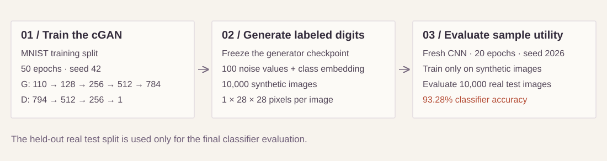

Train balanced, random and skewed recursive networks against dense models. Compare four datasets, feature orders and compute budgets.
Finding. 1,120 recorded experiments. Balanced trees beat random trees in 14 of 16 native settings, but the corrected-compute dense comparator in only 5 of 16. Dense models remain faster.
Test accuracy against trainable parameters. Means and one seed standard deviation across ten seeds; native feature order.Overview: settings won out of 16 native comparisons. Dense uses the corrected-compute comparator.Open all four accuracy plots ↗How the recursive models combine featuresEight-group schematics from the implemented seed-zero topologies. Blue blocks encode feature groups; orange nodes merge hidden vectors. Satimage uses nine groups. Run the example ↗
02 / Reinforcement learning
Learn a continuous control policy.
Shared-Policy DDPG: Tennis
Train a shared actor–critic policy with replay, target updates and bounded continuous actions. Package the saved policy for CPU inference.
Finding. Training spans 875 episodes, with the saved checkpoint recorded at episode 634. In a separate 100-episode evaluation, that policy averages 2.067 with learning and exploration disabled.
Training and saved-policy evaluation use separate axes. One historical training seed. The later training regression remains visible. Open full-size plots ↗How the shared policy learnsThe implemented training path: shared actor, local critic, shared replay and soft target updates. The critic evaluates one player at a time. Run the example ↗
03 / Generative deep learning
Can generated digits teach a classifier?
Conditional Handwriting Generation
Train a class-conditioned MLP cGAN from scratch, save a portable checkpoint and evaluate the usefulness of its generated images.
Finding. A classifier trained only on 10,000 synthetic digits reaches 93.28% accuracy on 10,000 real MNIST test images. The generator trained for 50 epochs; the classifier trained for 20.
Actual outputs from the fresh cGAN, sampling seed 42. Columns correspond to digits 0–9. One generator seed and one classifier seed. The full DDPM training run remains pending. Open the original grid ↗How the model is trained and evaluated

The reported accuracy measures synthetic-to-real classifier utility. Real MNIST test images train neither model. Full training and sampling records are linked above.
04 / Autonomous systems
Connect sensing to a measurable stop.
Autonomous Braking Simulation
Build a Webots controller that validates sensing, computes time to collision and enters a persistent braking state. Check the run with an independent supervisor.
Finding. The recorded static-obstacle run lasts 17.1 seconds without collision, with a minimum ground-truth obstacle distance of 15.4 metres.
Replotted from the saved run.csv. Dashed line marks entry into the braking state. Simulation evidence from one straight-road, static-obstacle scenario. Tap the chart to enlarge.Actual Webots frame from the recorded run. Original screenshot ↗
05 / Sensor fusion & AI safety
Govern what reaches the fusion decision.
Sensor Fusion Policy Engine
Apply versioned camera/radar release policies before association and persistence. Compare a deterministic matcher with a learned scorer while retaining decision provenance.
Finding. Across 3,000 synthetic missions, mean association F1 is 0.9416 for the deterministic method and 0.9298 for the learned method.
Three seeds × 1,000 synthetic missions. Dots show seed results. Tap the chart to enlarge.
06 / Applied machine learning
Turn a prediction into a warning policy.
Predictive Maintenance
Build causal sensor features, compare Ridge and random-forest baselines, then select a maintenance threshold on validation engines before replaying test histories.
Finding. Of 100 truncated historical test histories, 35 enter the observed danger window. Five of those receive no warning; 65 histories end before that window.
100 historical test engines; 65 histories end before the danger window. Threshold selected on validation. Tap the chart to enlarge.
How I work
Training is a question. Evaluation is the test.
I work across CNNs, transformers, variational autoencoders, GAN and diffusion experiments, reinforcement learning and applied ML. My focus is architecture choices, learning behavior and meaningful comparisons.
Project documentation identifies methods, contributions, available artifacts and reproducibility limits.
Three anonymized engagements spanning profitability, sales operations and commerce delivery. Each account distinguishes my contribution, the delivered work and the outcome supported by the records.